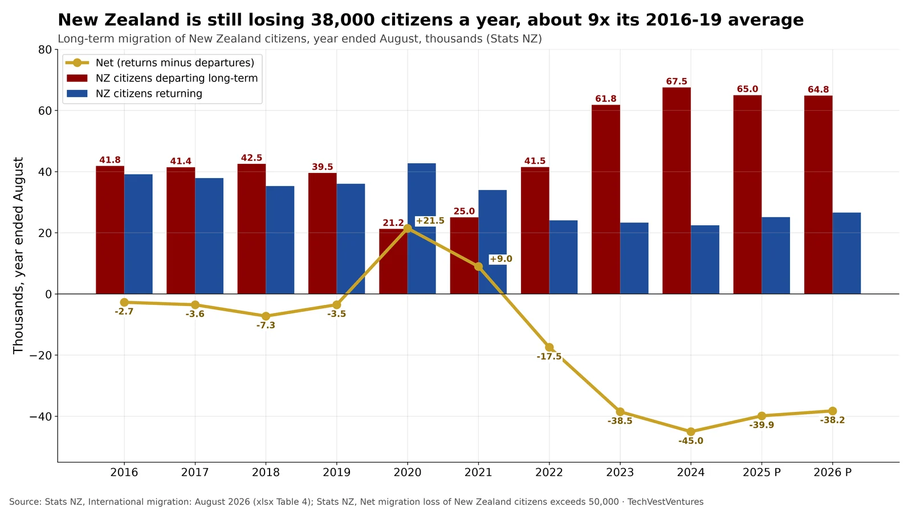

Q5. NZ Exodus

Stats NZ International migration, Aug 2026 (released Oct 14, 2026). In the year to August 2026, 64,800 New Zealand citizens left long-term and 26,600 came home, a net loss of 38,200 (±450). That is barely better than 2025 (−39,900) and 2024 (−45,000). In 2016-19 net losses ran 2,700 to 7,300 a year (average about 4,300). Most departing citizens go to Australia. Non-citizen arrivals (net +58,800) still keep total migration positive.
Note: 2025-2026 are provisional (P) under the 12/16-month rule and are typically revised. The Australia destination split comes from Stats NZ release commentary, not from the table used here.
Sources: Stats NZ, International migration: August 2026 (xlsx Table 4) Stats NZ, Net migration loss of New Zealand citizens exceeds 50,000